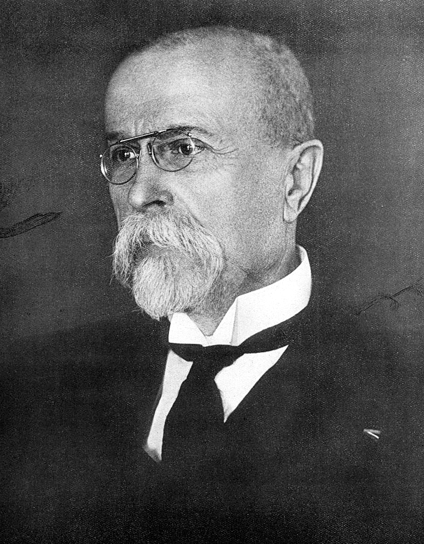

Slavná osobnost: Tomáš Garrigue Masaryk
| Portrét | Základní údaje | Významná díla | |
|---|---|---|---|
|  | Tomáš Garrigue Masaryk | Díla | |
| 7. března 1850, Hodonín | 14. září 1937, Lány | ||
| Stručná charakteristika | |||
| Státník Tomáš Garrigue Masaryk | |||
| Odkaz na wikipedii:https://cs.wikipedia.org/wiki/Tom%C3%A1%C5%A1_Garrigue_Masaryk | |||